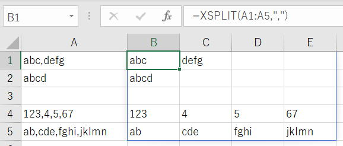

スピルに対応したXSPLITユーザー定義関数（文字区切り）
エクセルにスピルが登場して、VBAのユーザー定義関数の用途も広がってきていると思います。
そこで、文字列を指定した記号・文字列で区切て、セルに出力するユーザー定義関数を作ってみましょう。
VBAには Split関数 がありますが、これをワークシート関数として使えるようにしてみましょうという事です。

スピルでVBAの何が変わったか｜VBA技術解説
区切り位置ウィザード
ワークシートの関数で文字区切りする場合
UNIQUE(IFERROR(FIND(",",","&A1,SEQUENCE(1,LEN(A1))),1),TRUE),
UNIQUE(IFERROR(FIND(",",A1,SEQUENCE(1,LEN(A1))),LEN(A1)+1),TRUE)
-UNIQUE(IFERROR(FIND(",",","&A1,SEQUENCE(1,LEN(A1))),1),TRUE))
1
4
8
13
つまり、各区切りの先頭位置の数値配列です。
3
7
12
18
つまり、各区切りの終り位置の数値配列です。
=MID(文字列,各区切りの先頭位置,各区切りの終り位置-各区切りの先頭位置)
そして、もちろん文字区切りの数式は様々な方法が考えられます。
上記数式は、スピル後の新関数を使った一例になります。
これに対処するには、全体をIFERRORで囲んでください。
IFERROR(MID(・・・),"")
では、いよいよ本題の「スピルに対応したXSPLITユーザー定義関数（文字区切り）」に入ります。
ユーザー定義関数のVBAｺｰﾄﾞ
Function XSPLIT(範囲, 区切り文字)
Dim i As Long, j As Long
Dim rngAry, tmpAry
Dim rtnAry() As String
If IsArray(範囲) Then
rngAry = 範囲
ElseIf 範囲.Rows.Count > 1 Then
rngAry = 範囲.Value
Else
ReDim rngAry(1 To 1, 1 To 1)
rngAry(1, 1) = 範囲.Value
End If
ReDim rtnAry(1 To UBound(rngAry, 1), 1 To 1)
For i = LBound(rngAry, 1) To UBound(rngAry, 1)
tmpAry = Split(rngAry(i, 1), 区切り文字)
If UBound(tmpAry) + 1 > UBound(rtnAry, 2) Then
ReDim Preserve rtnAry(1 To UBound(rtnAry, 1), _
1 To UBound(tmpAry) + 1)
End If
For j = LBound(tmpAry) To UBound(tmpAry)
rtnAry(i, j + LBound(rngAry, 1)) = tmpAry(j)
Next
Next
XSPLIT = rtnAry
End Function
スピル対応のユーザー定義関数作成時の注意点
上記VBAでは、2次元配列にしているので、要素数を随時最大数にRedimしています。
tnAry() As String
ここは、型を指定せずにVariantにしてしまうと空欄が0で出力されてしまいます。
XSPLIT関数の使用例
横方向（列方向）に区切った文字を出力しているので、当然なのですが・・・
もちろん、
引数を増やすか、範囲の縦横を自動判別して戻す配列の縦横を自動的に作成することも可能です。
ですが、ワークシート関数には便利な関数が用意されています。
TRANSPOSE関数があるので、これを使えばこのVBAでも対応できてしまいます。
このようなスピルは非常に高速に処理されていると思います。
スピルしないエクセルで使う場合
これを、Ctrl+Shift+Enterで入力してください。
ユーザー定義関数の実践使用例
ユーザー定義関数でフリガナを取得する（GetPhonetic）
ユーザー定義関数でハイパーリンクのURLを取得（Hyperlink）
スピルと新関数の練習（XLOOKUP関数、LET関数、VBAまで）
同じテーマ「マクロVBAサンプル集」の記事
1次元配列の並べ替え（バブルソート,挿入ソート,クイックソート）
2次元配列の並べ替え（バブルソート,クイックソート）
Dir関数で全サブフォルダの全ファイルを取得
順列の全組み合わせ作成と応用方法
スピルに対応したXSPLITユーザー定義関数（文字区切り）
新着記事NEW ・・・新着記事一覧を見る
VBA100本ノック 100本目：WEBから100本ノックのリストを取得｜VBA練習問題（3月3日）
VBA100本ノック 99本目：自動席替え（行列と前後左右が全て違うように）｜VBA練習問題（3月2日）
VBA100本ノック 98本目：席替えルールが守られているか確認｜VBA練習問題（3月1日）
VBA100本ノック 97本目：Accessデータを取得（グループ集計）｜VBA練習問題（2月27日）
VBA100本ノック 96本目：Accessデータを取得（マスタ結合&抽出）｜VBA練習問題（2月26日）
VBA100本ノック 95本目：図形のテキストを検索するフォーム作成｜VBA練習問題（2月24日）
VBA100本ノック 94本目：表範囲からHTMLのtableタグを作成｜VBA練習問題（2月23日）
VBA100本ノック 93本目：複数ブックを連結して再分割｜VBA練習問題（2月22日）
VBA100本ノック 92本目：セルの色を16進で返す関数｜VBA練習問題（2月20日）
VBA100本ノック 91本目：時間計算（残業時間の月間合計）｜VBA練習問題（2月19日）
アクセスランキング ・・・ ランキング一覧を見る
1.最終行の取得（End,Rows.Count）｜VBA入門
2.RangeとCellsの使い方｜VBA入門
3.変数宣言のDimとデータ型｜VBA入門
4.マクロって何？VBAって何？｜VBA入門
5.Range以外の指定方法（Cells,Rows,Columns）｜VBA入門
6.セルのコピー&値の貼り付け（PasteSpecial）｜VBA入門
7.繰り返し処理（For Next)｜VBA入門
8.セルに文字を入れるとは（Range,Value）｜VBA入門
9.マクロはどこに書くの（VBEの起動）｜VBA入門
10.とにかく書いてみよう（Sub,End Sub）｜VBA入門
- ホーム
- マクロVBA応用編
- マクロVBAサンプル集
- スピルに対応したXSPLITユーザー定義関数（文字区切り）
このサイトがお役に立ちましたら「シェア」「Bookmark」をお願いいたします。
記述には細心の注意をしたつもりですが、
間違いやご指摘がありましたら、「お問い合わせ」からお知らせいただけると幸いです。
掲載のVBAコードは動作を保証するものではなく、あくまでVBA学習のサンプルとして掲載しています。
掲載のVBAコードは自己責任でご使用ください。万一データ破損等の損害が発生しても責任は負いません。